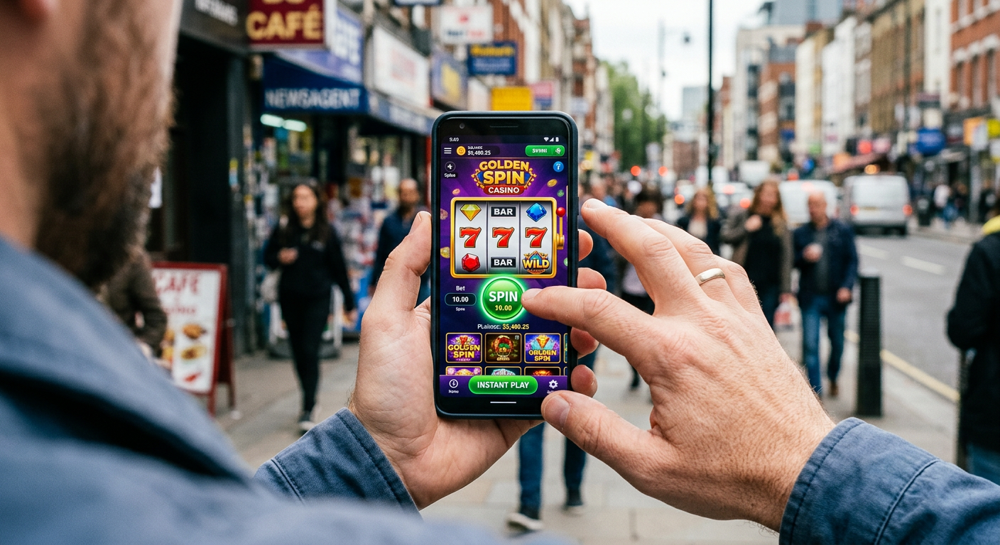
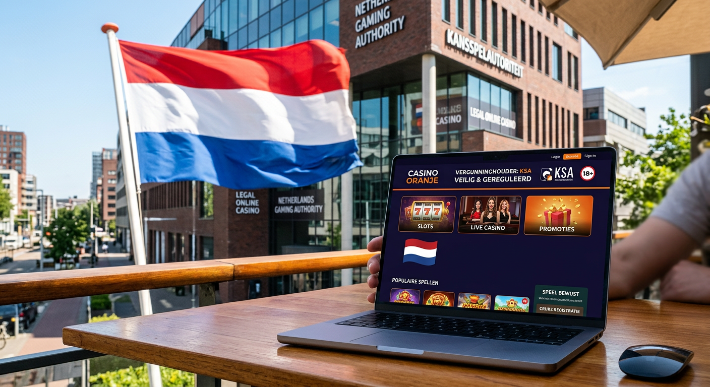
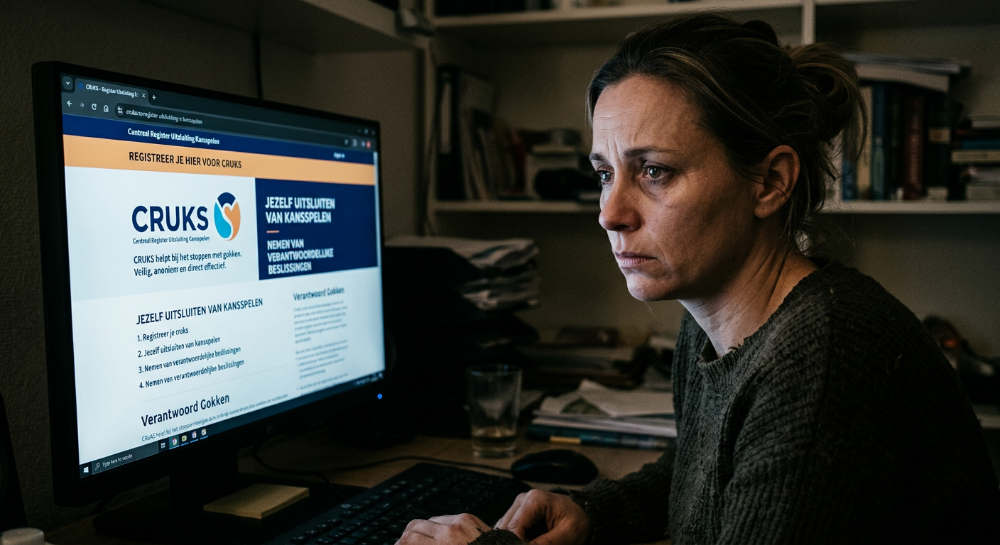

Nieuwe Casino Zonder Registratie 2026: De Ultieme Gids
De wereld van online entertainment is in 2026 sneller dan ooit tevoren. Voor de Nederlandse speler die geen zin heeft in langdurige aanmeldingsprocedures, is een nieuwe Casino Zonder Registratie de absolute standaard geworden. In dit artikel duiken we diep in de technologie, de wetgeving en de beste aanbieders van dit moment. Of je nu op zoek bent naar de hoogste RTP bij moderne gokkasten of de snelste uitbetalingen via iDEAL, wij hebben alle informatie verzameld die je nodig hebt om veilig en verantwoord te spelen.
Sinds de marktontwikkelingen van de afgelopen jaren is de behoefte aan anonimiteit en efficiëntie gegroeid. Spelers willen niet langer kopieën van hun paspoort opsturen naar vage e-mailadressen. In 2026 zorgt de integratie van geavanceerde banktechnologie ervoor dat verificatie op de achtergrond plaatsvindt, terwijl jij je focust op het Live Casino of de nieuwste sportweddenschappen. In deze gids leggen we uit hoe dit ecosysteem functioneert en waar je op moet letten bij het kiezen van een platform.
Het landschap van het nieuwe online casino is drastisch veranderd. Met spelers die steeds mobieler worden, is een naadloze ervaring essentieel. We zien dat merken zoals Goldbet de toon zetten door razendsnelle interfaces aan te bieden zonder de noodzaak voor een traditioneel account. In de volgende secties analyseren we de technische werking achter dit fenomeen.
Wat is een casino zonder registratie precies?
Een nieuwe Casino Zonder Registratie is een gokplatform waarbij de speler geen handmatig registratieformulier hoeft in te vullen. In plaats van het aanmaken van een gebruikersnaam en wachtwoord, log je in via je persoonlijke bankomgeving. Dit concept, dat oorspronkelijk bekend werd onder de naam Pay N Play, heeft zich in 2026 geëvolueerd tot een hypermodern systeem waarbij dataveiligheid en gebruikersgemak hand in hand gaan.
In Nederland is dit type platform populair omdat het de frictie bij het instappen wegneemt. Wanneer je een storting doet, worden je identiteitsgegevens veilig gedeeld door de bank met de operator. Dit betekent dat je direct kunt beginnen met spelen bij een casino zonder de gebruikelijke wachttijden voor documentverificatie (KYC). Het account wordt in feite automatisch op de achtergrond aangemaakt, gekoppeld aan je unieke bank-ID.
Dit systeem is niet alleen handig voor de speler, maar biedt ook extra veiligheid voor de aanbieder. Omdat de gegevens rechtstreeks van een bankinstelling komen, is de kans op fraude of minderjarig gokken aanzienlijk kleiner. Merken zoals Newlucky maken gebruik van deze technologie om een veilige omgeving te garanderen voor hun Nederlandse klantenkring in 2026.
Hoe werkt gokken zonder account in de praktijk?

Het proces van spelen bij een nieuwe Casino Zonder Registratie is verbazingwekkend simpel. In plaats van op een 'registreer' knop te klikken, zie je vaak direct een 'stort nu' knop op de homepage. Je kiest het bedrag dat je wilt overmaken en selecteert je bank. Vervolgens word je omgeleid naar de vertrouwde omgeving van je bank-app, waar je de betaling bevestigt met biometrische gegevens of een pincode.
Zodra de transactie is voltooid, word je teruggestuurd naar de website van de aanbieder. Je saldo is direct zichtbaar en je kunt meteen inzetten op je favoriete games. Het mooie van dit systeem in 2026 is dat uitbetalingen net zo snel gaan. Omdat je bankrekening al geverifieerd is tijdens de storting, staat je winst vaak binnen enkele minuten weer op je rekening.
Deze werkwijze is ideaal voor mensen die verschillende platforms willen uitproberen zonder overal een spoor van persoonlijke gegevens achter te laten. Het is een efficiënte manier om te genieten van een online casino zonder de administratieve rompslomp die vroeger zo typerend was voor de industrie.
De rol van Pay N Play technologie
Pay N Play is de ruggengraat van de meeste no-account sites. Ontwikkeld door het Zweedse Trustly, heeft deze technologie de markt in Noord-Europa en Nederland getransformeerd. Het fungeert als een brug tussen de bank van de gebruiker en het casino. In 2026 zien we dat ook andere spelers, zoals Zimpler en Brite, vergelijkbare diensten aanbieden die specifiek gericht zijn op de nieuwe Casino Zonder Registratie markt.
De technologie zorgt ervoor dat voldaan wordt aan de strenge anti-witwaswetgeving (AML). Terwijl jij stort, verstuurt de API van de betaalprovider de noodzakelijke KYC-data (Know Your Customer) naar de operator. Dit proces is volledig versleuteld en voldoet aan de strengste privacywetgeving van de Europese Unie. Het is een win-win situatie voor zowel privacy als veiligheid.
Storten en spelen via iDEAL en Trustly
In Nederland blijft iDEAL de onbetwiste koning van de online betalingen. Veel nieuwe platformen hebben iDEAL 2.0 geïntegreerd, wat directe verificatie mogelijk maakt. Trustly is echter de partij die het concept van 'spelen zonder account' echt groot heeft gemaakt. Beide methoden zijn in 2026 geoptimaliseerd voor mobiel gebruik, waardoor je met een paar tikken op je scherm veilig geld kunt overmaken.
Het voordeel van Trustly is de internationale dekking, waardoor spelers ook toegang hebben tot betrouwbare platforms met een licentie uit bijvoorbeeld Malta. Dit biedt een breder scala aan spellen en vaak ook competitievere bonussen dan wat je soms bij puur lokale aanbieders vindt. Sites zoals Dragobet maken slim gebruik van deze betaalstromen om een naadloze ervaring te bieden.
Waarom kiezen voor een nieuwe casino zonder registratie?
De belangrijkste reden voor de populariteit van een nieuwe Casino Zonder Registratie in 2026 is tijdswinst. We leven in een tijdperk waarin we onmiddellijk resultaat verwachten. Niemand wil 24 tot 48 uur wachten totdat een klantenservice een kopie van een energierekening heeft goedgekeurd. Bij een no-account platform is dit proces volledig geautomatiseerd en onmiddellijk.
Daarnaast is privacy een cruciale factor. Hoewel je jezelf nog steeds moet identificeren (gokken is immers een gereguleerde activiteit), hoef je je e-mailadres en telefoonnummer niet overal achter te laten. Dit betekent minder spam in je inbox en geen ongewenste marketingoproepen. Je blijft in controle over welke data je deelt en met wie.
Bovendien bieden deze moderne sites vaak een superieure interface. Omdat ze gebouwd zijn met de nieuwste technologische stacks, laden de games sneller en is de navigatie intuïtiever. Of je nu op je smartphone speelt tijdens het forenzen of thuis op een groot scherm, de ervaring bij een nieuwe Casino Zonder Registratie is altijd geoptimaliseerd voor het apparaat dat je gebruikt.
Voor- en nadelen van spelen zonder verificatie
Hoewel de voordelen overduidelijk zijn, is het belangrijk om een gebalanceerd beeld te hebben. Elk type platform heeft zijn eigen karakteristieken. In 2026 zijn de meeste kinderziektes van de no-account technologie weliswaar verholpen, maar er blijven afwegingen die een speler moet maken voordat hij besluit te storten.
Een aspect dat vaak wordt besproken, is de verantwoordelijkheid van de speler. Omdat het zo makkelijk is om te beginnen, is de drempel lager. Dit vereist een hogere mate van zelfdiscipline. Aan de andere kant zijn de tools voor verantwoord spelen op deze sites vaak zeer geavanceerd, met AI-gestuurde systemen die gokpatronen monitoren en ingrijpen wanneer dat nodig is.
Hieronder volgt een overzicht van de belangrijkste punten die je moet overwegen bij een nieuwe Casino Zonder Registratie:
| Voordeel | Nadeel |
|---|---|
| Directe toegang tot spellen | Niet overal beschikbaar voor NL spelers |
| Uitbetalingen binnen 5 minuten | Minder loyaliteitsprogramma's zonder account |
| Hogere mate van privacy | Soms beperkte klantenservice opties |
| Geen spam via mail of SMS | Focus ligt vaak op kwantiteit van spellen |
Voordelen: Snelheid, privacy en gemak
De snelheid is simpelweg ongeëvenaard. In een nieuwe Casino Zonder Registratie kun je binnen 60 seconden van het openen van de browser naar je eerste spin op een gokkast gaan. Dit is een revolutie vergeleken met het oude model waar registratie soms wel tien minuten kon duren, exclusief de tijd voor het uploaden van documenten.
Privacy is in 2026 een groot goed. Door te kiezen voor een online casino zonder traditioneel account, minimaliseer je je digitale voetafdruk. Je bankgegevens worden via een beveiligde tunnel verwerkt en de operator ziet alleen de noodzakelijke data om de transactie te valideren. Dit geeft veel spelers een geruststellend gevoel van veiligheid.
Nadelen: Beperktere bonussen en licentie-overwegingen
Een punt van kritiek op no-account sites is soms het bonusaanbod. Omdat de speler niet 'gebonden' is aan een account met een wachtwoord, zijn traditionele welkomstbonussen soms lastiger te implementeren. Echter, we zien dat moderne aanbieders zoals Fortunicabet dit oplossen door te werken met cashback-systemen of directe free spins die gekoppeld zijn aan je bank-ID.
Daarnaast moet je altijd de licentie controleren. Sommige van deze snelle sites opereren onder een licentie uit Curaçao of Malta. Hoewel deze jurisdicties streng zijn, bieden ze soms andere beschermingsniveaus dan de Nederlandse Kansspelautoriteit (KSA). Het is essentieel om te weten bij wat voor soort instelling je jouw geld onderbrengt.
Is een online casino zonder account legaal in Nederland?

De legaliteit van gokken in Nederland is strikt geregeld door de Wet Kansspelen op afstand (Koa). Sinds de opening van de markt zijn er veel aanbieders bijgekomen. Een nieuwe Casino Zonder Registratie kan legaal opereren in Nederland, mits zij een vergunning hebben van de KSA. Deze vergunninghouders zijn verplicht om spelers te controleren in het CRUKS-register.
Er zijn echter ook veel internationale sites die de no-account technologie aanbieden. Hoewel deze technisch gezien niet altijd een Nederlandse vergunning hebben, zijn ze vaak wel gelicenseerd in andere EU-landen. Voor de speler is het cruciaal om te begrijpen dat spelen op een site zonder KSA-vergunning risico's met zich mee kan brengen, zoals een gebrek aan lokale juridische ondersteuning bij conflicten.
In 2026 is de handhaving door de KSA intensiever geworden, maar de technologische innovatie stopt niet. Veel spelers zoeken naar een balans tussen de veiligheid van de Nederlandse wet en de innovatieve functies van internationale platforms. Het is altijd aanbevolen om te controleren of een site verantwoord gokken serieus neemt en transparant is over hun bedrijfsvoering.
Het verschil tussen KSA-vergunningen en buitenlandse licenties
Een KSA-vergunning is de gouden standaard voor Nederlandse spelers. Het garandeert dat de aanbieder belasting betaalt in Nederland en zich houdt aan zeer strikte regels omtrent verslavingspreventie. Grote namen zoals BetMGM en Hard Rock Casino opereren onder deze vlag en bieden een veilige omgeving. Echter, de registratieprocedure bij deze sites is vaak iets uitgebreider vanwege de koppeling met iDIN.
Aan de andere kant heb je de internationale nieuwe Casino Zonder Registratie opties met licenties uit Malta (MGA). Deze bieden vaak een grotere variëteit aan spellen van providers zoals Pragmatic Play en hebben soms soepelere bonusvoorwaarden. Voor veel ervaren spelers is de MGA-licentie nog steeds een teken van hoge betrouwbaarheid en eerlijk spel.
De impact van het CRUKS-register
Het Centraal Register Uitsluiting Kansspelen (CRUKS) is een essentieel onderdeel van het Nederlandse gokbeleid. Elke legale aanbieder in Nederland moet bij elke inlogsessie controleren of een speler hierin geregistreerd staat. Bij een nieuwe Casino Zonder Registratie gebeurt deze check direct op basis van je BSN of unieke identificatie die via de bank wordt doorgegeven.
Als je in CRUKS staat, krijg je geen toegang tot legale Nederlandse goksites. Dit systeem is bedoeld om spelers tegen zichzelf te beschermen. Internationale sites zonder KSA-licentie hebben geen toegang tot CRUKS. Dit is een belangrijk punt van aandacht voor spelers die een pauze hebben ingelast; zij moeten extra voorzichtig zijn wanneer ze dergelijke platforms bezoeken.
Wat is CRUKS?

CRUKS staat voor Centraal Register Uitsluiting Kansspelen. Het is een database waarin spelers worden opgenomen die tijdelijk of permanent niet meer willen of mogen gokken. Je kunt jezelf vrijwillig inschrijven voor een periode van minimaal zes maanden. Ook kan een aanbieder of een naaste een verzoek tot uitsluiting indienen als er duidelijke signalen van gokverslaving zijn.
In 2026 is CRUKS geëvolueerd naar een meer proactief systeem. Het werkt nu samen met bankinstellingen om ongewoon financieel gedrag te signaleren. Voor een nieuwe Casino Zonder Registratie met een Nederlandse licentie is de koppeling met CRUKS naadloos. Het is een krachtig middel om de sociale kosten van gokken te minimaliseren en een gezonde speelomgeving te bevorderen.
Het is belangrijk om te weten dat CRUKS alleen geldt voor legale Nederlandse aanbieders. Platforms die opereren onder vlag van Tulipa Ent Limited of andere internationale holdings vallen hier meestal niet onder. Leer meer over de rol van de Kansspelautoriteit op Wikipedia om de juridische context beter te begrijpen.
Nieuw online casino 2026: Wat zijn de trends?
Het jaar 2026 staat in het teken van hyper-personalisatie. Een nieuwe Casino Zonder Registratie maakt tegenwoordig gebruik van AI om de lobby aan te passen aan de voorkeuren van de speler. Als je van gokkasten met een hoge volatiliteit houdt, zal de interface deze direct aan je tonen zodra je bent 'ingelogd' via je bankstorting.
Daarnaast zien we een enorme vlucht in Live Casino innovaties. Het is niet langer alleen maar Roulette of Blackjack. Game shows met augmented reality-elementen zijn de standaard geworden. Providers pushen de grenzen van wat mogelijk is met streamingtechnologie, waardoor de ervaring van een fysiek casino bijna volledig wordt geëvenaard op je mobiele toestel.
Ook de integratie van crypto-betalingen via tussenpersonen is een trend bij het nieuwe online casino. Hoewel directe crypto-stortingen in Nederland nog gereguleerd zijn, maken diensten zoals Revolut het mogelijk om crypto-tegoeden direct om te zetten naar fiat-geld voor gebruik bij no-account sites. Ontdek de wereld van het nieuwe online casino in 2026 en ervaar deze innovaties zelf.
Top 3 nieuwe casino's zonder registratie
Op basis van onze uitgebreide tests in 2026 hebben we een selectie gemaakt van de meest betrouwbare en innovatieve platforms. Deze aanbieders blinken uit in snelheid, spelaanbod en klantenservice. Hier is onze top 3 voor Nederlandse spelers die direct aan de slag willen.
- Goldbet: Dit platform staat bovenaan onze lijst vanwege de fenomenale snelheid van de interface. Goldbet biedt een enorme selectie aan sportweddenschappen en klassieke casinospellen zonder dat je ooit een formulier hoeft in te vullen.
- Newlucky: Voor wie houdt van een modern design en gulle beloningen, is Newlucky een uitstekende keuze. Hun integratie met snelle betaalmethoden is perfect afgestemd op de NL markt.
- Dragobet: Dit casino combineert een uitgebreid Live Casino met een zeer gebruiksvriendelijk no-account systeem. Bij Dragobet staat veiligheid hoog in het vaandel, ondersteund door de nieuwste encryptietechnologieën.
Al deze aanbieders zijn grondig gecontroleerd op hun uitbetalingsbeleid en de eerlijkheid van hun spellen. Ze maken gebruik van gecertificeerde Random Number Generators (RNG) om te garanderen dat elke spin of hand volledig willekeurig is. Dit is cruciaal voor een eerlijke ervaring bij een nieuwe Casino Zonder Registratie.
Populaire betaalmethoden bij snelle goksites
Snelheid is de essentie van een nieuwe Casino Zonder Registratie. Dit wordt mogelijk gemaakt door een selecte groep betaalproviders die directe transacties ondersteunen. In 2026 zijn deze methoden veiliger en sneller dan ooit, met ingebouwde verificatie die voldoet aan alle Europese richtlijnen.
Hier zijn de meest gebruikte methoden:
- Trustly: De pionier op het gebied van Pay N Play. Het verbindt je bank direct met het casino.
- iDEAL: In 2026 de meest gebruikte methode in Nederland, nu ook met volledige ondersteuning voor instant verificatie.
- Zimpler: Een geduchte concurrent van Trustly die vooral in Scandinavië en Duitsland populair is, maar ook steeds vaker in Nederland verschijnt.
- Revolut: Veel spelers gebruiken Revolut voor hun gokactiviteiten vanwege de uitstekende budgetteringstools in de app.
- PayPal: Hoewel technisch gezien een e-wallet, biedt PayPal in sommige regio's ook directe koppelingen aan die registratie-vrij spelen mogelijk maken.
Het mooie van deze methoden is dat ze tweerichtingsverkeer ondersteunen. Dit betekent dat wanneer je besluit te stoppen, je winst met dezelfde snelheid terugvloeit naar je rekening als waarmee je het gestort hebt. Dit is een van de grootste revoluties in de online casino wereld van de afgelopen jaren.
Bonussen bij nieuwe no-account aanbieders
Er was een tijd dat een nieuwe Casino Zonder Registratie nauwelijks bonussen aanbood. Die tijd ligt in 2026 ver achter ons. Aanbieders hebben creatieve manieren gevonden om spelers te belonen zonder dat er een traditioneel account nodig is. De bonus wordt simpelweg gekoppeld aan je unieke bank-ID.
Een populaire vorm van beloning is de wekelijkse cashback. Hierbij krijg je een percentage van je eventuele verliezen teruggestort op je rekening. Dit is een transparante manier van belonen die zeer gewaardeerd wordt door Nederlandse spelers. Geen ingewikkelde rondspeelvoorwaarden, maar gewoon direct geld terug op je rekening.
Daarnaast zien we vaak free spins bij populaire spellen van Pragmatic Play. Deze spins worden direct geactiveerd na je eerste storting. Het platform Spinorhino is een uitstekend voorbeeld van een site die begrijpt hoe je spelers moet enthousiasmeren met directe extraatjes zonder gedoe.
Cashback bonussen en gratis spins
Cashback is de koning van de bonussen in 2026. Het biedt een vangnet voor spelers en is uiterst eenvoudig te begrijpen. Vaak gaat het om 10% tot 20% van de netto verliezen over een bepaalde periode. Voor een nieuwe Casino Zonder Registratie is dit de ideale manier om loyaliteit op te bouwen zonder dat er een accountbeheerder aan te pas komt.
Gratis spins worden vaak weggegeven op de nieuwste gokkasten. Dit stelt spelers in staat om nieuwe titels uit te proberen zonder extra risico. Het is een slimme marketingtool die perfect past bij de snelle aard van no-account gokken. Je stort, krijgt je spins, en ziet direct of het geluk aan jouw zijde staat.
Welkomstbonus bij het nieuwe casino
De welkomstbonus bij een nieuwe Casino Zonder Registratie ziet er in 2026 vaak anders uit dan de 100% match bonus die we van vroeger kennen. Hoewel sommige sites nog steeds je eerste storting verdubbelen, ligt de focus nu vaker op 'instant rewards'. Denk aan een pakket van spins en een gegarandeerde cashback voor de eerste 24 uur.
Merken zoals BetMGM en Tonybet hebben hun welkomstpakketten geoptimaliseerd voor de snelle beslisser. Het doel is om de speler direct waarde te bieden zonder dat hij zich door dertig pagina's aan algemene voorwaarden moet worstelen. Transparantie is hierbij het sleutelwoord. De voorwaarden worden in 2026 vaak getoond in een simpel overzicht voordat je de storting bevestigt.
Het is wel essentieel om altijd de 'fine print' te lezen. Let op zaken als de maximale inzet per spin met bonusgeld en welke spellen wel of niet bijdragen aan de rondspeelvoorwaarden. Ook bij een online casino met snelle registratie blijven deze regels van kracht om misbruik te voorkomen.
Veiligheid en betrouwbaarheid controleren
Hoe weet je of een nieuwe Casino Zonder Registratie veilig is? In 2026 zijn er een aantal duidelijke indicatoren. Ten eerste kijk je naar de licentie onderaan de website. Een vergunning van de KSA, MGA of een andere gerenommeerde autoriteit is een vereiste. Daarnaast moet de website gebruik maken van SSL-encryptie om al het dataverkeer te beveiligen.
Een andere check is de aanwezigheid van bekende softwareproviders. Grote namen zoals Pragmatic Play of JVH gaming werken alleen samen met platforms die aan hun strenge integriteitseisen voldoen. Als je spellen van deze top-ontwikkelaars ziet, is dat vaak een goed teken voor de betrouwbaarheid van de gehele site.
Verder kun je kijken naar de reputatie van het moederbedrijf. Bedrijven zoals Tulipa Ent Limited beheren vaak meerdere succesvolle merken. Hun ervaring en financiële stabiliteit bieden een extra laag zekerheid voor de speler. Lees ook altijd onafhankelijke reviews van andere spelers om een beeld te krijgen van de praktijkervaringen.
Spelaanbod: Gokkasten en Live Casino
Het spelaanbod bij een nieuwe Casino Zonder Registratie is in 2026 werkelijk gigantisch. Dankzij cloud-hosting technologie kunnen deze sites duizenden titels aanbieden zonder dat de website traag wordt. De nadruk ligt vaak op moderne video slots met innovatieve mechanieken zoals Megaways of Cluster Pays.
In het Live Casino kun je aanschuiven bij tafels met echte dealers. Of je nu Tonybet live games speelt of kiest voor de exclusieve tafels van Hard Rock Casino, de kwaliteit is in 4K-resolutie. Je kunt communiceren met de dealers en andere spelers, wat zorgt voor een sociale ervaring die voorheen alleen in fysieke casino's mogelijk was.
Voor de liefhebbers van tafelspellen zijn er talloze varianten van Roulette, Blackjack en Baccarat beschikbaar. Veel van deze spellen hebben een hoge RTP (Return to Player), wat betekent dat ze op de lange termijn een groter deel van de inzet teruggeven aan de spelers. Dit maakt ze populair bij zowel recreatieve spelers als high rollers.
Software providers: Pragmatic Play en meer
De kwaliteit van een nieuwe Casino Zonder Registratie valt of staat met de software. In 2026 is Pragmatic Play nog steeds een dominante kracht in de industrie, bekend om hun visueel verbluffende games en spannende bonusrondes. Hun titels zijn volledig geoptimaliseerd voor no-account platforms, wat zorgt voor een vlekkeloze spelervaring.
Naast de grote namen zien we ook veel niche-ontwikkelaars die innovatieve concepten naar de markt brengen. Denk aan VR-gokkasten of spellen die elementen van gaming en gokken combineren. De diversiteit zorgt ervoor dat er voor elk type speler iets te vinden is bij een online casino van deze tijd.
Een overzicht van top providers die je vaak tegenkomt:
| Provider | Specialiteit | Populaire Titel in 2026 |
|---|---|---|
| Pragmatic Play | Video Slots & Live Casino | Gates of Olympus Deluxe |
| NetEnt | Innovatieve Mechanieken | Starburst XXXtreme 2 |
| Evolution Gaming | Game Shows | Crazy Time World |
| Play'n GO | Mobiele Optimalisatie | Book of Dead 2026 |
Mobiel spelen zonder registratie
In 2026 wordt meer dan 85% van alle online weddenschappen geplaatst via een mobiel apparaat. Een nieuwe Casino Zonder Registratie is daarom 'mobile-first' ontworpen. Je hebt geen aparte app nodig; de websites werken perfect in de browser van je smartphone of tablet. De laadtijden zijn minimaal en de bediening is aangepast voor touchscreens.
Het mooie van spelen bij een online casino zonder account op je mobiel is de integratie met mobiel bankieren. Omdat je bank-app waarschijnlijk al op hetzelfde toestel staat, is het doen van een storting of uitbetaling een kwestie van seconden. Je gebruikt simpelweg FaceID of je vingerafdruk om de transactie te accorderen en je bent klaar om te spelen.
Sites zoals Spinorhino hebben hun interface zo minimalistisch gemaakt dat het navigeren door duizenden spellen op een klein scherm moeiteloos gaat. Dit gemak is een van de drijvende krachten achter de aanhoudende groei van de nieuwe Casino Zonder Registratie sector in Nederland.
Vergelijking: Pay N Play vs Traditioneel
Waarom zou je in 2026 nog kiezen voor een traditioneel casino met een registratieformulier? Er zijn enkele redenen. Traditionele merken zoals Hommerson of Winz bieden vaak zeer uitgebreide loyaliteitsprogramma's aan waarbij je punten spaart voor fysieke prijzen of exclusieve evenementen. Dit is makkelijker te beheren met een vast accountprofiel.
Echter, voor de gemiddelde speler wegen de voordelen van een nieuwe Casino Zonder Registratie zwaarder. De vrijheid om te gaan en staan waar je wilt, zonder vast te zitten aan één platform, is erg aantrekkelijk. Je hoeft je geen zorgen te maken over het onthouden van tientallen wachtwoorden of het risico dat je persoonlijke data wordt gelekt bij een database-inbraak.
In 2026 zien we dat de scheidslijn tussen beide modellen dunner wordt. Veel traditionele sites bieden nu ook een 'snelle start' optie aan via iDIN, terwijl no-account sites steeds betere manieren vinden om terugkerende spelers te herkennen via hun bank-ID en hen op maat gemaakte bonussen aan te bieden.
Veelgestelde vragen over casino’s zonder registratie
Hieronder beantwoorden we de meest gestelde vragen die we in 2026 ontvangen van Nederlandse spelers. Het is belangrijk om goed geïnformeerd te zijn voordat je begint bij een nieuwe Casino Zonder Registratie.
Is mijn geld veilig bij een casino zonder account?
Ja, mits je speelt bij een gelicentieerde aanbieder. Het geld wordt beheerd via vertrouwde betaalproviders zoals Trustly of iDEAL, die onder toezicht staan van centrale banken. De casino's zelf hebben geen directe toegang tot je bankgegevens.
Hoe kan ik mijn winst laten uitbetalen?
Dit is het makkelijkste deel. Je klikt op 'uitbetalen' en kiest het bedrag. Omdat je bankrekening al gekoppeld is door je eerdere storting, wordt het geld direct overgemaakt. In 2026 staat het bedrag vaak binnen enkele minuten op je rekening.
Kan ik een limiet instellen op een no-account site?
Absoluut. Sterker nog, legale nieuwe Casino Zonder Registratie platforms in Nederland zijn wettelijk verplicht om je de mogelijkheid te bieden limieten in te stellen voor stortingen, speeltijd en verliezen, nog voordat je begint met spelen.
Zijn er kosten verbonden aan het gebruik van Pay N Play?
In de meeste gevallen rekenen de casino's zelf geen kosten voor het storten of opnemen van geld via deze methode. Het is echter altijd verstandig om de voorwaarden van je eigen bank te controleren, hoewel dit in 2026 zelden meer een issue is.
Conclusie: Is een nieuw casino zonder account de juiste keuze?
De opkomst van de nieuwe Casino Zonder Registratie heeft de gokindustrie in 2026 fundamenteel veranderd. Het biedt een niveau van gemak en snelheid waar we een decennium geleden alleen maar van konden dromen. Voor de speler die waarde hecht aan privacy en directe actie, is dit model ongetwijfeld de beste keuze.
Of je nu kiest voor de sportweddenschappen bij Goldbet, de uitgebreide slotcollectie van Newlucky, of de sfeer van het live casino bij Dragobet, de mogelijkheden zijn eindeloos. Onthoud echter dat gokken altijd een vorm van entertainment moet blijven. Gebruik de beschikbare tools voor verantwoord spelen en wees je bewust van de risico's.
Met de voortdurende technologische innovaties en de strikte regulering in Nederland, is de toekomst van het online casino zonder account rooskleuriger dan ooit. Het biedt een veilige, snelle en plezierige manier om van je favoriete spellen te genieten. Voor meer informatie over veilig online gedrag, kun je terecht op de website van de Rijksoverheid. Veel succes en speel verantwoord!

Digitale marketeer en contentspecialist met ruim 7 jaar ervaring.